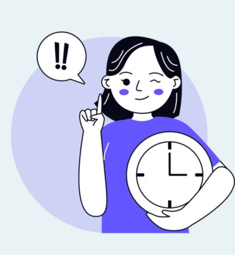

Clear your doubts now...
Are you wondering if you have what it takes to make a difference? The answer is a resounding yes! The Sri Lanka MediConnect Hub welcomes individuals like you to join our life-saving community. Regardless of your background, age, or profession, you have the power to contribute to a cause that directly impacts lives. Whether you are a first-time donor or someone with a history of giving, your willingness to contribute makes a significant impact. Donating blood is a simple yet profound way to save lives. It's about the collective strength of individuals coming together to support their community during crucial moments. So, can you donate? Absolutely! Your blood has the potential to be a lifeline for someone in need. Take that step today, sign up, and discover the fulfillment that comes with being part of a network dedicated to making a positive change. Embrace the opportunity to be a hero in someone's story – because yes, you can make a difference!


Find out if you are able give blood for the first time.
• There are other medical conditions that may mean you can't donate...

There are some health, travel and lifestyle reasons that may stop you from being able to donate blood on
a
temporary basis.
If you are not sure you can donate, please contact us to discuss your situation.